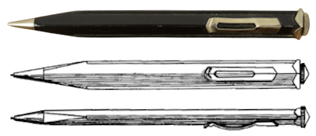
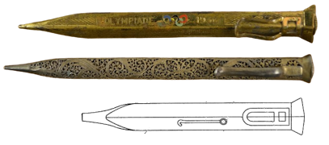
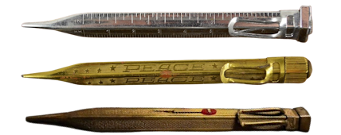
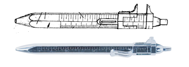
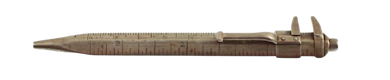
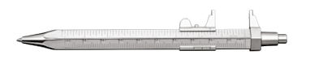

Fend Typokrat
Schiebelehre und Kugelschreiber in einem
Stand: 09.05.2026
Dies ist ein Unterartikel. Hier geht es zum Hauptartikel über Fend
 Fend Truxa 111, sehr ähnlich dem Typokrat
Fend Truxa 111, sehr ähnlich dem TypokratDer Fend Typokrat war ein Mehrfunktionen-Kugelschreiber, der ab 1958 von der Firma Gebrüder Fend aus Pforzheim verkauft wurde.
Primär wurden die Funktion Kugelschreiber und Schiebelehre zusammengefasst.
Insgesamt bat der Typokrat aber 12 Funktionen, wie es in 'Die Westdeutsche Wirtschaft und ihre führenden Männer' (1958) heißt.
(Eine vollständige Liste der Funktionen konnte noch nicht aufgestellt oder gefunden werden.)
Geschichte und Entwicklung
Der Ursprung der ungewöhnlichen, vierseitigen flachen Stiftform liegt in den USA.Dort wurde von Martin E. Trollen 1935 für Brown & Bigelow das Aussehen eingetragen (US105622) und von diesen dann auch hergestellt.
Er war größer als die folgenden japanischen und deutschen Versionen des Designs.

In Deutschland stellte die bekannte Firma Sarastro aus Pforzheim ihn als 'Unitas' her.
Bereits zu den Olympischen Spielen 1936 ist ein solcher Stift von Sarastro belegt.
Das Design unterscheidet sich von Trollens Patent hauptsächlich in der kürzeren Länge und dem anderen Klipp.
Desweiteren entwarf Sarastro 1937 einen Zweifarbstift basierend auf diesem Design.
In dessen Gebrauchsmuster wird auch der Nutzen von Trollens Erfindung als Brieföffner angemerkt.
Es lässt sich nur eine britische Veröffentlichung zum Zweifarbstift finden (GB471037), doch aufgrund der Markierung 'DRGM' muss auch eine deutsche für die Ein- und Mehrfarbvariante existiert haben.

In Japan stellte Morita Metal einen dem Sarastro Unitas ähnlichen Ein- und Zweifarbstift als Kanoe Peace her. (Anmerkung: Unter der Marke 'Kanoe' wurden als 'Peace' verschiedene Stifte verkauft.)
Es ist noch ungeklärt, wann 'Peace' erstmals verwendet wurde. Es könnte sich auf das Ende des 2.WK beziehen.
Das auffälligste an der japanischen Version ist der Schriftzug 'PEACE' auf der einen, und die Skala auf der anderen Seite.
Der Klipp ist anders als beim Unitas aufgeschoben, lässt sich also vom Stift entfernen und auch 180° um die Längsachse des Stifts gedreht aufschieben.
Deshalb ist der Klipp auf manchen Bildern auf der Skala-, auf anderen auf der Schriftzug-Seite.
Besonders bemerkenswert ist zudem die Zweifarbversion, welche keinen 'PEACE'-Schriftzug trägt, und dem Patent von Sarastro stark ähnelt.
Anders als im "Leadhead's Pencil Blog 2" vermutet, wurde der flache 'Kanoe Peace' mit großer Sicherheit nicht von den Amerikanern, sondern von den Deutschen an Morita lizensiert.
Zum einen aufgrund des Klipp-Aussehens und der Zweifarbversion, zum anderen deshalb, weil Morita Metal Kontakt zur Pforzheimer Stiftindustrie hatte, was die Patentangabe in der Verpackung mindestens eines Stiftes von Morita Metal belegt. In dieser wurden Fend-Patente für den Super-Norma angegeben.
Moritas Kanoe-Peace-Stift wurde stark exportiert, dem heutigen Vorkommen nach wohl vor allem in die USA und Teile Europas, aber weniger nach Deutschland, wobei das noch weitere Recherche erfordert.

1958 stellte Fend in Deutschland dann den "Typokrat" her: Eine Kombination aus Kugelschreiber und Schiebelehre (nicht bebildert).
Anfang der 1960er Jahre änderte Fend den Typokrat etwas ab (DE1770518) und bewarb ihn unter ihrer Truxa-Reihe als Truxa Nr.111.

Ob Fend letztendlich selbst auf die Idee des Typokrats/Truxa111 kam, ist fraglich.Vor Fend war wie oben beschrieben von Morita Metal die Skala hinzugefügt worden, und zudem existiert eine undatierte Version aus England, welche einen Drehbleistift-Mechanismus nutzt. Solche Stifte sind meistens früher als in den 1960er Jahren zu finden. Der Klipp ist genietet.

2000 wurde das erste und einzige Gebrauchsmuster (DE20012957) der Firma Carl-Jürgen Fend angemeldet. Es betraf eine Fortsetzung des Typokrat bzw. Truxa Nr.111.Neben den zwei Grundfunktionen (Kugelschreiber und Schiebelehre) wurden noch eine Tabelle, ein Profilmesser und ein Spannungsprüfer konzeptioniert. Letzterer schaffte es aber nicht ins realisierte Produkt.
Bemerkenswerterweise war der Klipp genietet, was an den oben erwähnten englischen Stift erinnert.
Heute verkauft Cleo Schreibgeräte diesen sogenannten Messograf.
Wohlmöglich war der angedachte Name für den Messograf 'Messo-FAS', da diese 2002 die letzte angemeldete Marke der Firma war.
Ich habe Cleo Schreibgeräte kontaktiert, doch keine Antwort erhalten.
